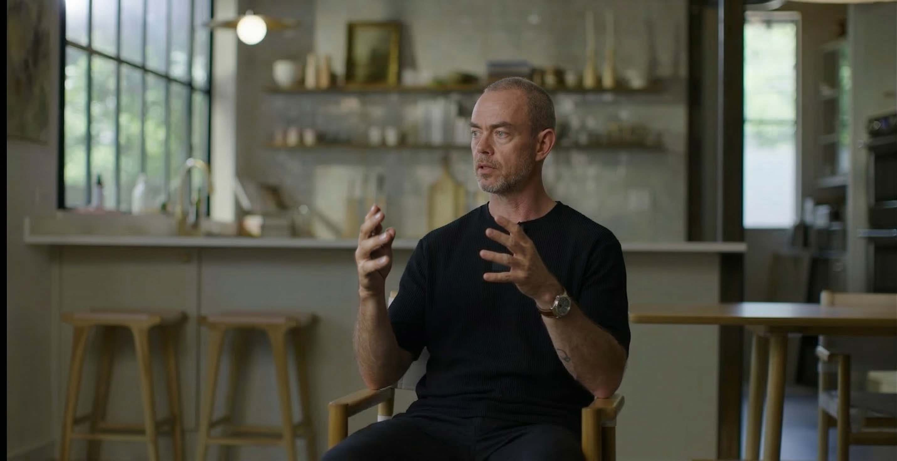
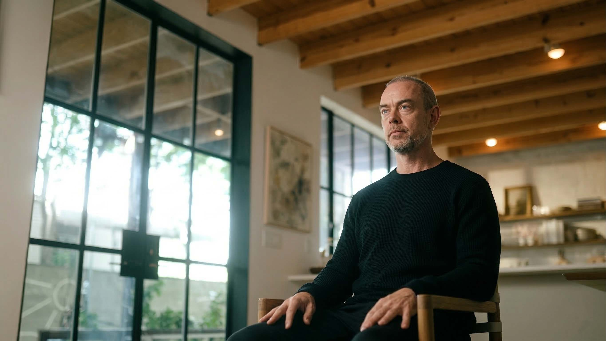
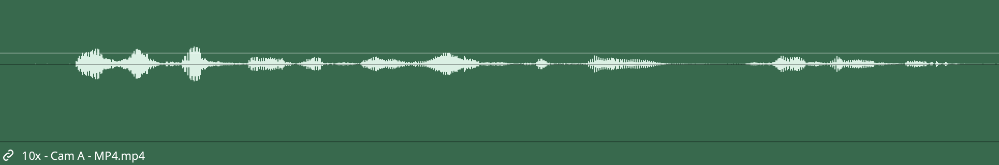
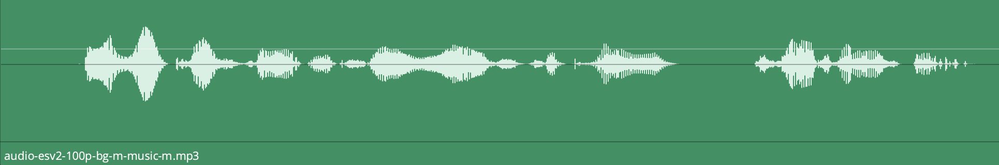
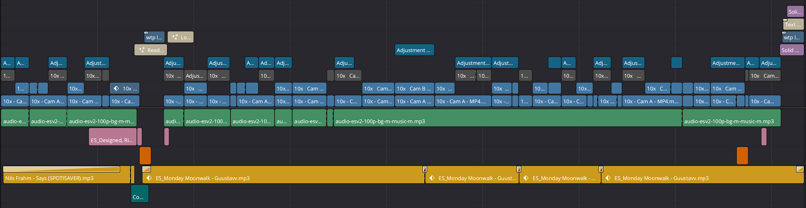
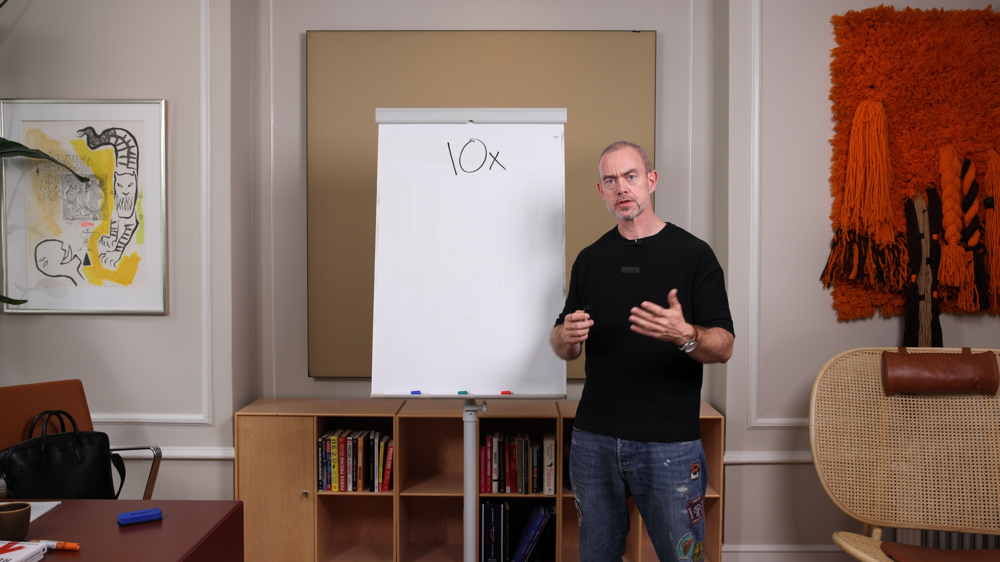
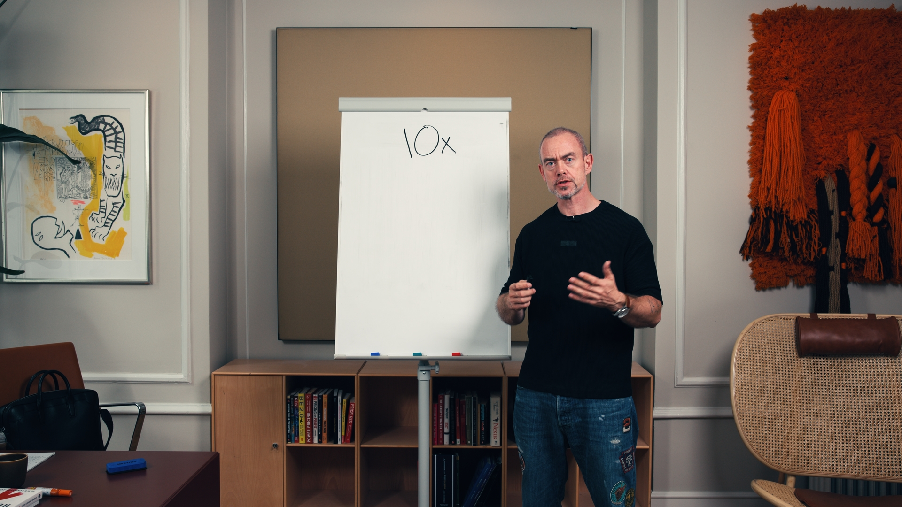

Below you will find the delivered edit, followed by a full breakdown of how I would approach filming, lighting, audio, and post-production for your audience.






What I already did: noise reduction and EQ on the delivered edit.
What I would do on set: acoustic treatment, proper mic placement, and a controlled recording environment. The difference between audio that sounds like a room and audio that sounds like a studio.

The speaker carries the content. The music carries the feeling. The sound effects carry the edit. I chose a track that supports without competing and layered SFX to reinforce every transition and beat. Whooshes on cuts. Risers before key points. Soft impacts that give motion graphics weight. None of it is loud. All of it is felt.


Every graphic element in the delivered edit was designed around the WTP brand palette and identity. Logo placement, lower thirds, transitions.
Your content is full of numbers, frameworks, and insights that disappear the moment the speaker moves on. Animated statistics, key quote callouts, chapter markers, and visual breakdowns turn a talking head into a visual experience. The viewer retains more. The content performs better. The brand looks sharper.
end of the page.